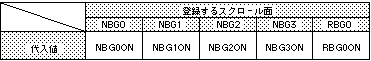

Return to previous page | Return to menu | Go to next page
void
Scroll function
Line color screen enable set
void slLineColDisp(flag)
Uint16 flag ;
flag screen specification
Sets the screen that is affected by the line color when the top image is displayed.
You can specify multiple screens in or format.
None
You can specify the following parameters:

Note) The values in the above table are defined in “sl_def.h” included with the system.
Reference: Chapter 8 Scroll
slLineColDisp